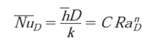
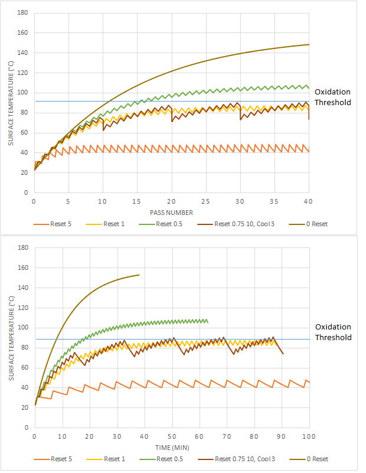

Modeling Trail Cup Temperature During Additive Manufacturing
Project Aim: Modeling the temperature of a shielding gas trail cup during additive manufacturing process to reduce oxidation and improve weld quality.
Background: During metal additive manufacturing process, some oxidation was observed. Temperature measurements were taken during each pass on the shielding gas trail cup. It was thought that since the shielding gas trail cup was getting too hot, it was creating convection currents and disrupting the shielding effects of the argon gas.

Temperature of the shielding gas trail cup probed at points shown at each pass
Plot of temperature of shielding gas trail cup
Goal of this analysis is to make a model of the shield gas trail cup. By keeping the temperature below a certain point would reduce the convection flow, and allow the shield gas assembly to work properly.
Governing Equations
Grashof Number:
Prandtl Number:
Rayleigh Number:
Nusselt Number Horizontal Plate:
Nusselt Number Vertical Plate:
Surface Irradiance due to Radiation:
Calculation:
Sample calculation result. The plot shows how the temperature increases as a function of passes. By modifying the inputs, welds can be created in a way to keep the temperature below a threshold. Welds created below this threshold should have less oxidation due to minimal convection flow.
This calculation adds certain methods to reduce trail gas cup temperature. This is done by adding a prolonged rest period after a certain amount of passes.